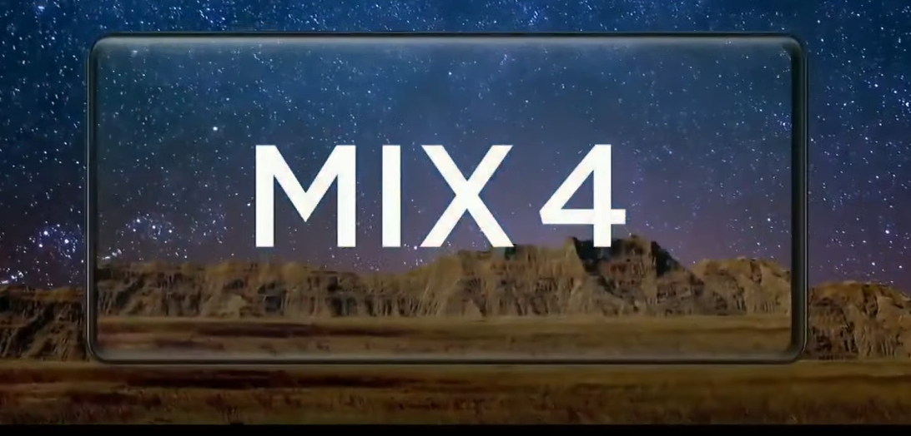
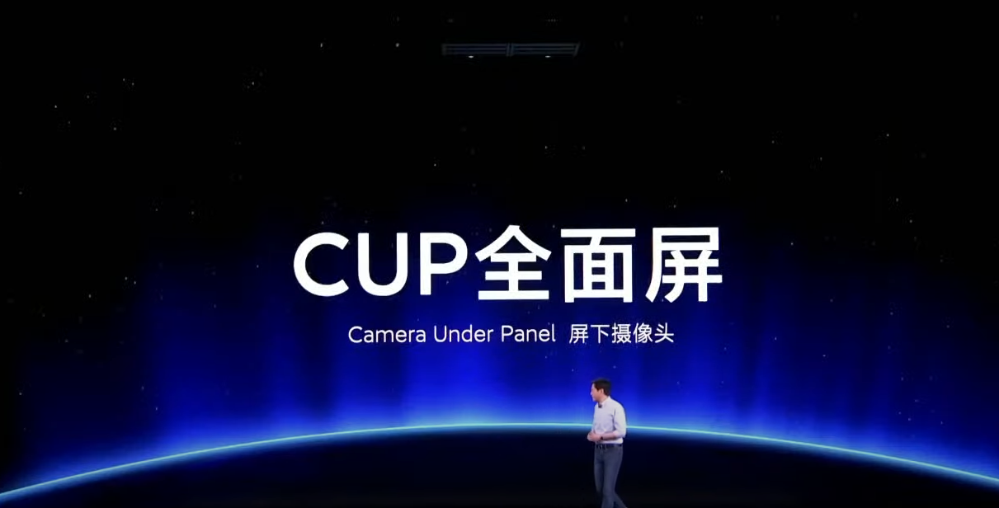
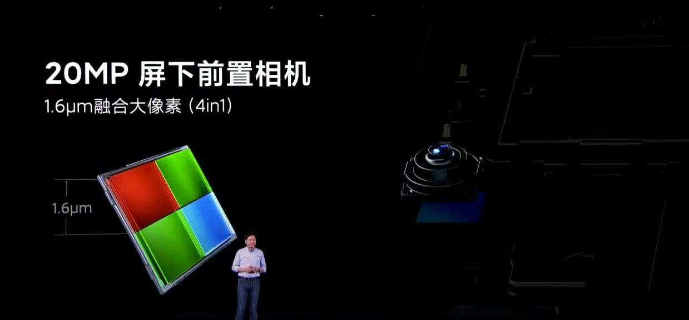
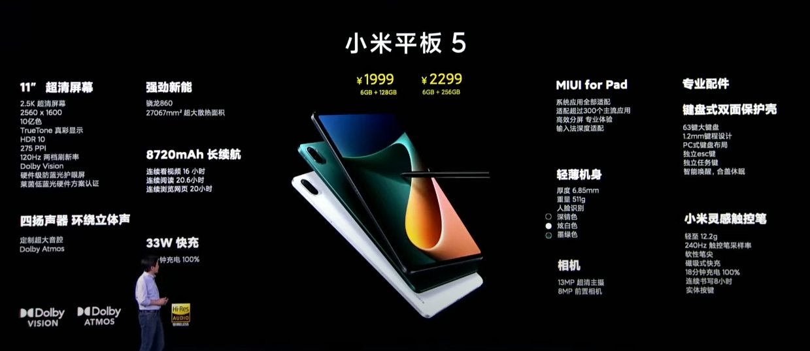
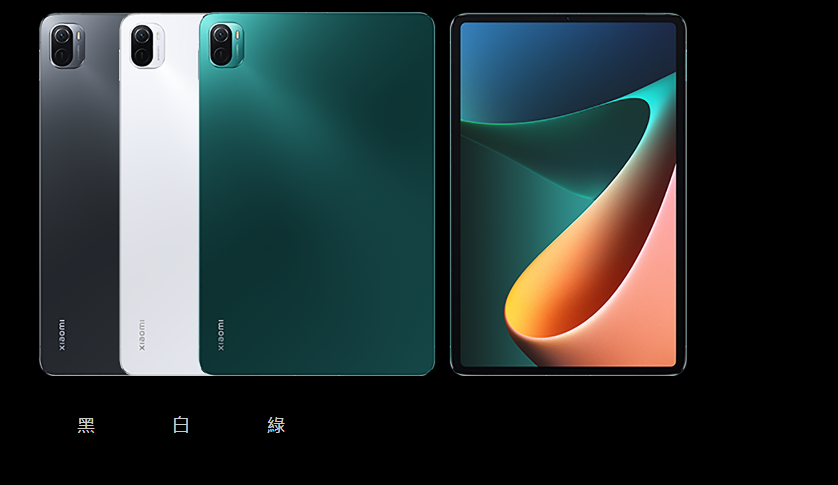
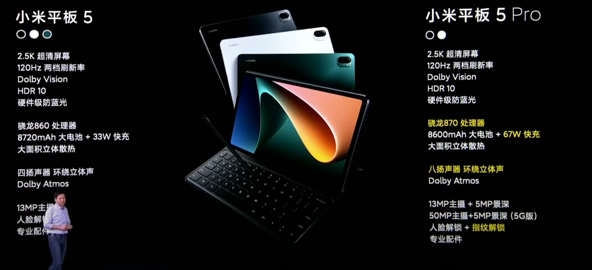
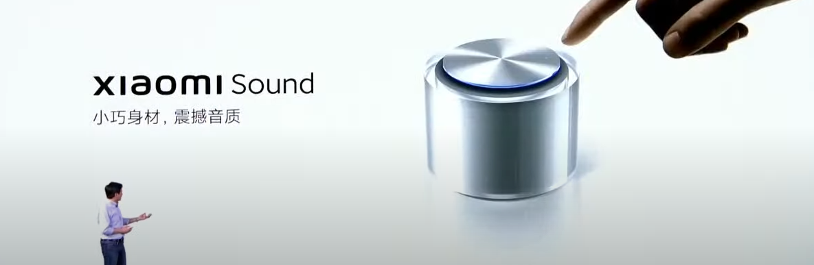
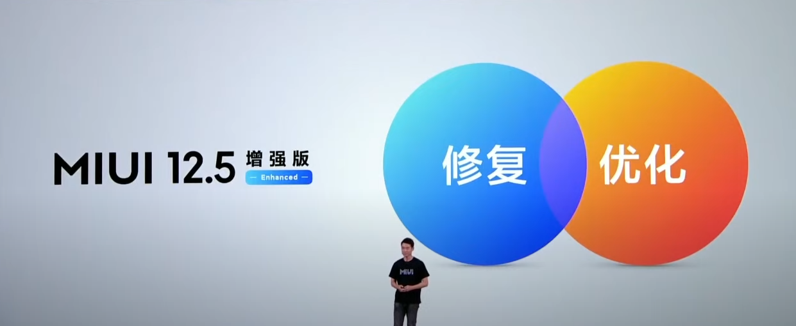

這場發表會大概是兩小時多，我們就帶你來看看「小米秋季發表會」究竟發表了哪些??
1.小米 MIX 4
小米mix4是小米第四代的Mix機型(勉強可以算是)。

小米mix4搭載6.67 英寸AMOLED CUP微曲面螢幕，120HZ螢幕刷新率，480Hz 觸控採樣率， 10bit 色深 TrueTone 顯示，Dolby Vision，採用康寧大猩猩 Victus 玻璃。

以及這次主打的20MP屏下攝像頭

規格配置高通 S888+ 處理器、4500mAh 電池容量、120W 有線充電、50W 無線快充，UWB一指連，安兔兔性能跑分超過 83 萬分，同時也配備 LPDDR5 6500Mbps RAM、UFS 3.1 ROM 。散熱方面，小米也表示在材料科技上採用1206mm2 大面積 3D 石墨烯散熱板＋ 3932mm2 中框 40µm 石墨烯＋ 5150mm2 雙 40µm 石墨材料，能夠降低用戶使用時的溫度提升。
相機方面，小米 MIX 4 搭載 1 億像素主鏡頭 1/1.33″超大感光元件丨支持四合一1.6μm 大像素輸出丨7P丨f/1.95 大光圈| OIS 光學防抖 | 等效24mm焦段+120° 自由曲面超廣角：13MP丨f/2.2光圈丨等效12mm焦段+50X 潛望式長焦：8MP｜5倍光學變焦｜等效120mm焦段｜OIS光學防抖，前置2000 萬屏下相機。
外觀，一體化精密陶瓷機身，顏色分別是陶瓷白、陶瓷黑、影青灰。
小米 MIX4 8GB+128GB 人民幣 4,999 元、8GB + 256GB 人民幣 5,299 元、12GB + 256GB 人民幣 5,799 元、12GB + 512GB 人民幣 6,299 元，今天開始預購，8/16 開賣。
2.小米平板 5 系列
小米平板5系列，總共有兩個版本分別是小米平板 5 與小米平板 5 Pro 。



螢幕方面，小米平板5系列搭載11吋 2.5K LCD屏幕，120Hz 刷新率，支持 HDR10，Dolby Vision，TrueTone 真彩顯示，萊茵硬件低藍光認證。
硬體規格方面，小米平板 5 Pro 搭載高通 Snapdragon 870 處理器， 8GB LPDDR5 RAM、256GB UFS 3.1 ROM，支持Wi-Fi 6、藍牙5.2、5G，內建 8600mAh 大容量電池，搭載 8 揚聲器環繞立體聲，電源鍵的指紋解鎖，小米平板 5 搭載高通 Snapdragon 860 處理器， 6GB LPDDR4X RAM、256GB UFS 3.1 ROM，支持藍牙5.0，內建 8720mAh 大容量電池，搭載 4 揚聲器環繞立體聲，皆支持 Dolby Atmos及人臉解鎖。
相機方面，小米平板搭載1300萬主鏡頭+800 萬前置鏡頭，小米平板 5 Pro 則搭載5000萬主鏡頭+500萬景深鏡頭+同樣也是800 萬前置鏡頭。
小米平板5系列搭載MIUI for Pad 平板系統。
小米平板 5 標準版 6GB＋128GB 版本售價人民幣 1,999 元，6GB＋256GB 版本售價人民幣 2,299 元，顏色有深錆色、炫白色、墨綠色三種顏色選擇。
小米平板 5 Pro 6GB＋128GB 版本售價人民幣 2,499 元， 6GB＋256GB 版本售價人民幣 2,799 元，顏色有 深錆色、炫白色兩種顏色選擇。
小米平板 5 Pro 5G 8GB＋256GB 售價人民幣 3,499 元，顏色只有深錆色。

小米平板5系列外接配件:
鍵盤式雙面保護殼，鍵盤採用 63 鍵大鍵盤、 1.2mm 鍵程設計，畢竟是中國版的，所以就沒有注音鍵帽，當然也不排除會推出國際版的可能。
磁吸雙面保護殼
小米靈感觸控筆，機身重量 12.2g ，支持 240Hz 採樣率、4096 級壓感，筆桿上設有兩顆多功能實體按鍵。
3.xiaomi sound

xiaomi sound是一款智慧喇叭，xiaomi sound外觀設計，透明的罐狀機身，上方有懸浮式觸控頂蓋，能夠 360 度全向出音，2.25英寸釹鐵硼雙磁路全頻單元，最高90dB的震撼聲壓，54mm × 44mm的雙懸挂無源輻射器，下潛至70Hz的飽滿低頻，獲得了 Hi-Res 高解析認證，HARMAN調音技術。
連接方面，Xiaomi Sound搭載了UWB連接技術，支持藍牙5.2技術，滿足多種設備的播放需求。
4.MIUI12.5增強版

MIUI12.5增強版，不僅修復了160個系統頭部問題及224個系統應用問題，同時還帶來了自研的四項全新技術
1、液態存儲技術，針對文件存儲機制的自研優化，手機使用36個月後，讀寫性能僅衰減不到5%，手機依然流暢如初；
2、原子記憶體技術，通過超精細記憶體管理，將後臺應用「原子化」，減少頻繁的後臺清理和反覆加載，應用駐留和響應得到全面提升；
3、焦點計算技術，感知最明顯的核心場景，提高UI渲染優先級，提升流暢度、降低功耗；
4、智能均衡技術，對硬件性能功耗進行智能調配，滿足不同場景下硬件性能的最大限度發揮，從而達到穩定、流暢、省電。

MIUI12.5增強版將於8月13日開啟穩定版逐步推送，首批適配了機型有12款，分別是小米MIX 4、小米11 Ultra、小米11 Pro、小米11、小米10至尊紀念版、小米10 Pro、小米10S、小米10、Redmi K40、Redmi K40 Pro、Redmi K30S至尊紀念版、Redmi K30 Pro等。
5.小米電視
6.CyberDog仿生四足機器人